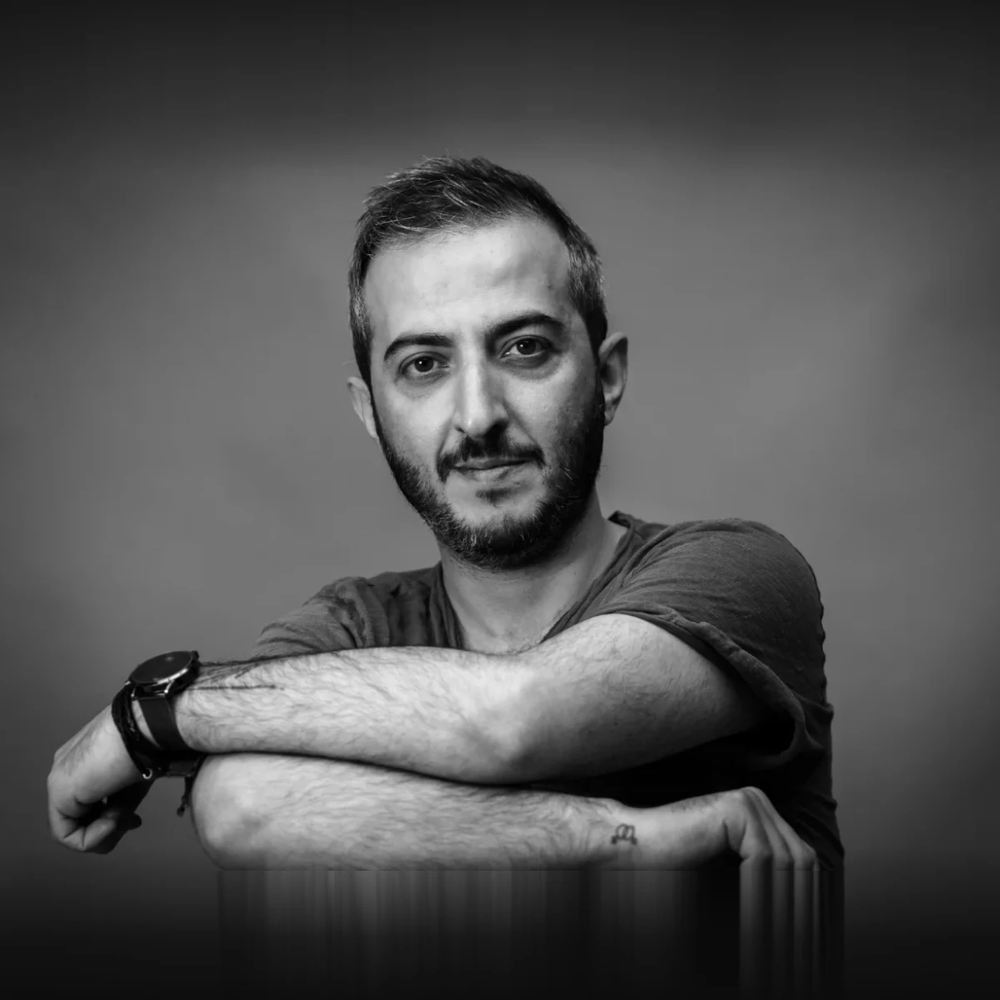
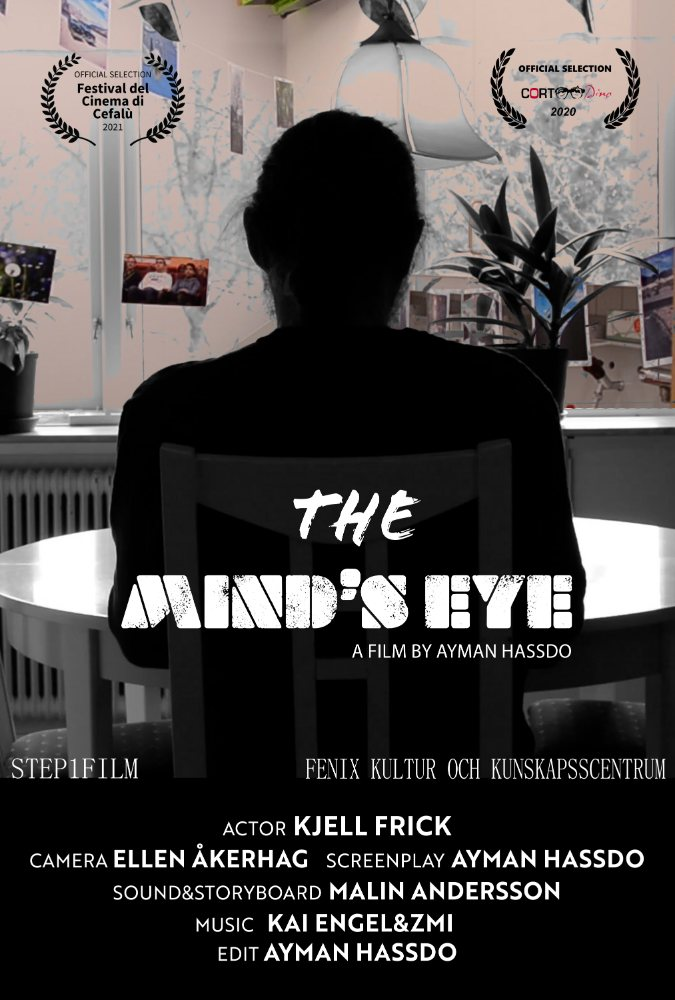
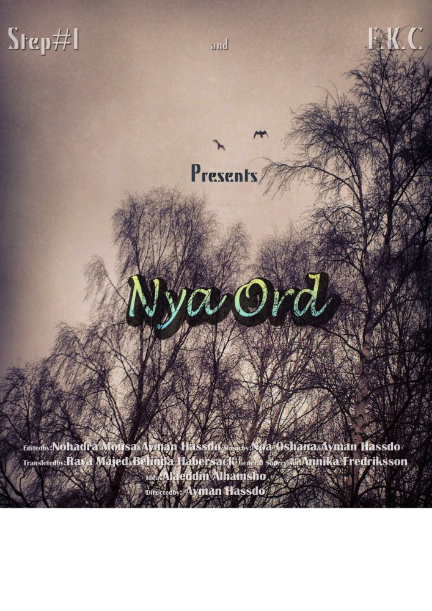

Ayman Hassdo – regissör och filmmaker
Filmmaker baserad i Småland. Grundare av produktionsbolaget STEP1FILM.

Biografi
Ayman Hassdo är filmmaker, regissör, klippare och musiker, baserad i Småland. Han föddes i nordöstra Syrien och kom till Sverige när kriget tvingade honom att lämna sitt hem. Sedan 2013 arbetar han som filmregissör i Sverige.
Ayman har examen från Film & Tv skolan i Kairo. I Sverige har han studerat dokumentärfilm på Ölands folkhögskola och även gått på Tornedalens folkhögskola. Han arbetar ofta i flera led av samma film — han skriver, regisserar och klipper — och musiken är en del av samma hantverk.
Hans filmer handlar om människor snarare än om frågor. Kortfilmen The Mind’s Eye från 2020 skrev, regisserade och klippte han själv. Just nu arbetar han med en trilogi dokumentärfilmer om migration och integration, där Birds of Passage, en samproduktion med Story AB, och Jag som har två mammor är de två första delarna.
Ayman driver produktionsbolaget STEP1FILM, som gör dokumentär, kortfilm och uppdragsfilm i Småland och Jönköpings län. Bolaget hjälper också nya filmskapare att ta sitt första steg — från den första idén till en färdig film på biograf eller festival.
Filmografi
-

2020The Mind’s Eye
Kortfilm
Regi · manus · klipp
-
2022
Otyg
Kortfilm · spelfilm
Manus · regi
-

2016Nya ord
Dokumentär
Regi